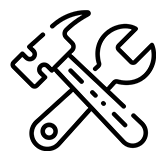
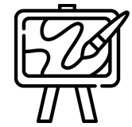

HOME
> 미술사업 >
미술교육
미술교육
예술 현장과 미술에 대한 이해와 감상을 돕는
체계적인 교육 프로그램
금호 예술 아카데미
금호미술관은 일반 관람객에게 예술 현장과 미술에 대한 이해와 감상을 돕는 체계적인 교육 프로그램을 기획하고, 작가 및 전문가들에게 보다 심화된 지식과 정보를 제공하고자 각종 강연 및 세미나를 제공해왔습니다.
-  건축
-  미술
- 디자인
금호미술관의 문화예술 이론 강좌 프로그램인 '금호예술아카데미'는 1989년 금호갤러리 개관에 앞서 1987년에 시작되었습니다. '금호예술아카데미'는 지난 30여년간 음악 및 건축, 미술, 디자인 등 문화 전반에 걸친 다양한 강좌들로 구성되어 호평을 받고 있습니다.
키즈 팝콘
아이들을 위한 현대미술-
- 01 미술과 정서발달
- 정서는 기쁨과 슬픔, 즐거움과 노여움, 공포와 불안 등의 감정을 바로 느끼고 표현하는 것을 말합니다. 어린이들은 세상에 태어나자마자 다양한 감정을 성인보다 더 빈번하게 경험합니다. 이러한 환경에서 접하게되는 누적된 두려움과 공포의 감정을 효과적으로 극복하게 하는 감정순화의 기능을 갖고 있는 것 중 하나가 바로 미술 활동입니다. 그래서 손가락그림(Finger painting)이나 점토놀이와 같은 미술 활동은 심리치료에 많이 활용되기도 합니다.
-
- 02 미술과 조형능력
- 조형능력은 주어진 재료나 소재를 활용하여 물질적으로 표현하는 능력입니다. 무엇을 표현한다는 것은 자신에게 잠재된 생각을 끄집어내거나 자신이 의도한 바를 손과 신체를 통해 가시적 형태로 실현시키는 일입니다. 특히 어린이미술은 신체발달에 있어 소근육의 발달 또는 손과 눈의 협응능력을 돕고, 심미적 시각을 기르고 유희적 표현활동을 돕는다는 점에서 육체와 미적 정신의 조화로운 성장을 이루게 합니다.
-
- 03 미술과 창의성
- 창의성은 기존에 없었던 것을 새로 만드는 것이 아니라 기존에 있는 것들 간에 새로운 관계와 질서를 발견하는 능력입니다. 어떠한 대상을 그대로 모방하기보다는 영감을 통해 스스로 생각하고 깨닫는 능력입니다. 창의성은 7차 교육과정의 모든 교과에서 중요하게 다루어지고 있으며, 어린이가 성장하여 사회를 살아가는데 가장 필요한 능력입니다. 남과 다른 독특한 능력, 타인에 대한 융통성, 위기를 극복해나가는 문제해결능력 등을 가리킵니다. 미술교육은 창의성을 길러줍니다.
-
- 04 금호만의 미술교육
- 금호미술관은 아이들의 정서발달, 조형능력, 창의성을 기르기 위해 금호만의 미술교육 시스템을 구축하였습니다. 미술관 전시의 성격에 맞춰 다양한 어린이 워크샵과 교육 프로그램을 운영하는데 집중하여 어린이들이 현대미술을 쉽게 이해할 수 있고 보다 심화된 미술창작활동을 경험할 수 있도록 2011년부터 '키즈팝콘' 프로그램을 기획 및 진행하였습니다. 이 프로그램은 금호영아티스트와 금호창작스튜디오 입주작가들이 어린이들과 함께 실기 수업을 진행하며, 현장중심의 살아있는 교육을 제공하고자 합니다.